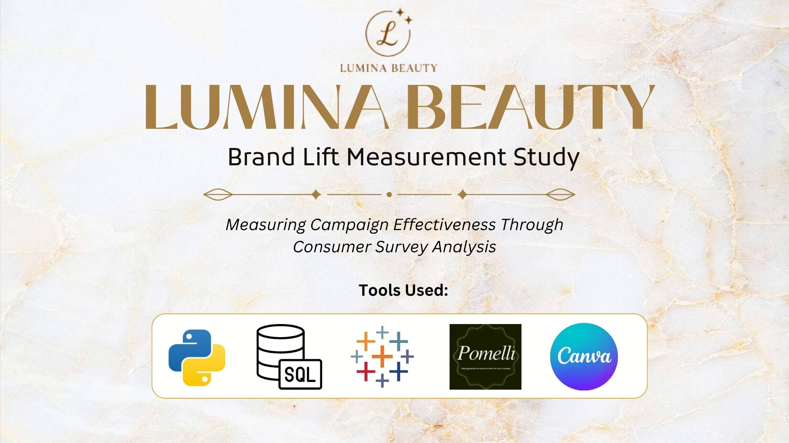

Lumina Beauty Brand Lift Study
Measured campaign effectiveness through consumer survey analysis, validated data workflows, and executive-ready dashboard storytelling.

Business Question
How effectively did the campaign improve brand awareness, perception, purchase intent, and consumer engagement?
Approach
Used Python to create a synthetic brand lift dataset, SQL to validate and structure the analysis, and Tableau to visualize lift across consumer survey metrics.
Deliverables
Canva case study, Tableau dashboards, SQL validation workflow, and Python dataset generation code for a polished end-to-end brand measurement project.